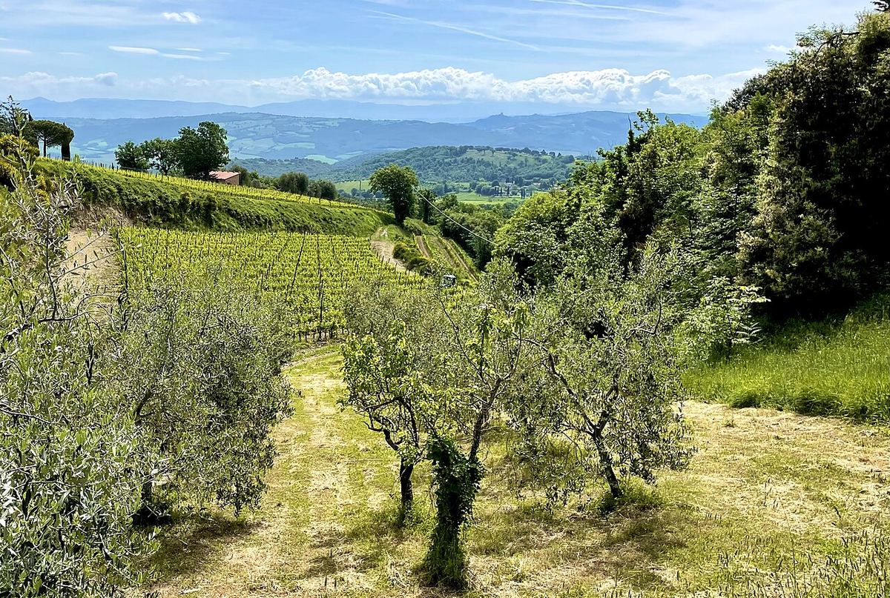

RED
Brunello di Montalcino is a 100% Sangiovese red made in the municipality of Montalcino, in the province of Siena. It is known for its long mandatory ageing and its capacity to develop in bottle.

In Montalcino, the name Brunello was the local term for Sangiovese. In the second half of the nineteenth century the Biondi-Santi family, and Ferruccio Biondi-Santi in particular, selected this variety on their Il Greppo estate and made a pure Sangiovese red intended for long ageing, at a time when the area was better known for Moscadello, a sweet white. For much of the twentieth century Brunello remained a small production in the hands of a few estates. The designation became a DOC in 1966 and, in 1980, one of Italy's first DOCGs. The producers' consortium was established in 1967. From the 1970s and 1980s, the arrival of new wineries greatly expanded the vineyard area and the wine's international profile.
The zone coincides with the municipality of Montalcino, a hill crowned by the town and bounded by the valleys of the Orcia, Asso and Ombrone rivers. To the south-east, the Monte Amiata massif offers protection from storms and hail, while the relative proximity of the Tyrrhenian Sea brings Mediterranean influence. The climate is warmer and drier than in Chianti Classico, although it varies between the cooler northern slopes and the warmer, sunnier southern ones.
Soils are highly varied: the higher areas are rich in galestro and calcareous marls, while at lower altitudes there are more clay and sandy soils, with alluvial deposits in the valleys. This variety, together with altitude and exposure, explains the differences in style between the various slopes.
Brunello is made exclusively from Sangiovese and must be aged for at least two years in wood. It may not be released before 1 January of the fifth year after the harvest, or of the sixth year in the case of Riserva. For Sangiovese wines intended for earlier drinking there is the Rosso di Montalcino DOC, and the area also has the Sant'Antimo and Moscadello di Montalcino DOCs.
Brunello usually shows a ruby or garnet colour, aromas of ripe cherry, plum, aromatic herbs, leather and spice, and a palate with marked acidity, firm tannins and the structure to develop for many years in bottle. With age, notes of forest floor, tobacco and sweet spice emerge.